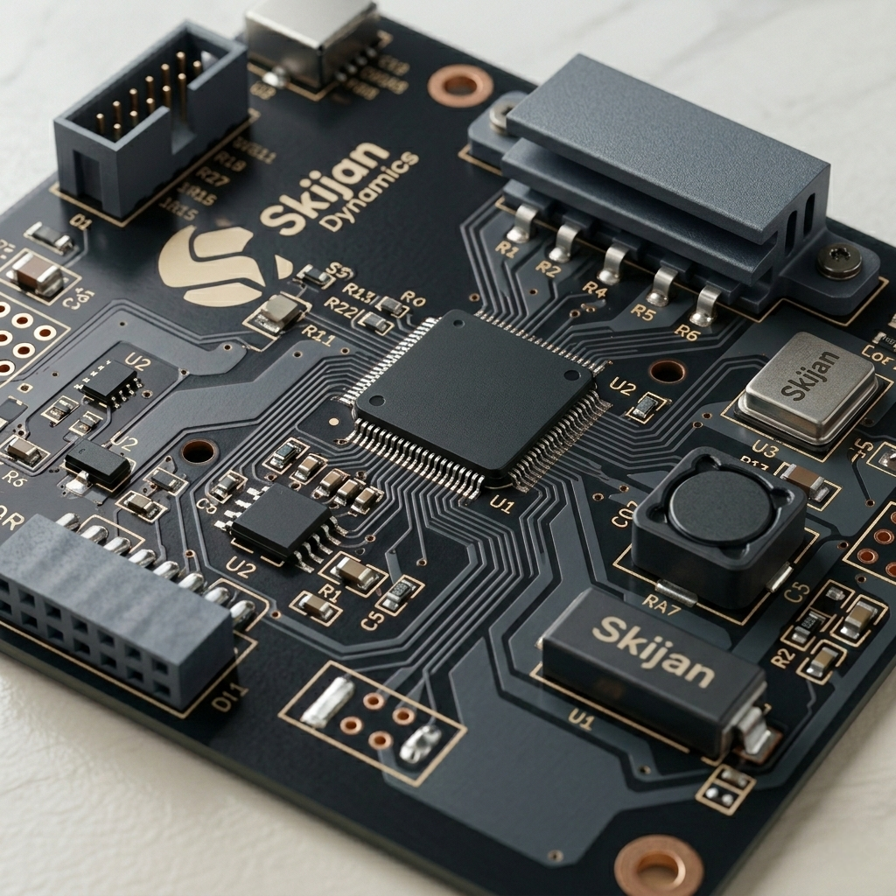

The fundamental language of CPUs — how machine instructions are structured, decoded, and executed at the hardware level.
Every instruction goes through this repeating cycle — the heartbeat of every CPU, running billions of times per second.
The Instruction Set is the complete library of commands a CPU understands. There are two dominant design philosophies that have shaped modern computing:
Complex Instruction Set Computer
CISC CPUs use a microcode layer — a hidden translator inside the chip. One complex instruction (like "Calculate and Store") is internally broken down into many tiny micro-operations. This makes writing programs easier but makes the hardware design very complex.
Priority: Memory efficiency. Programs are shorter because one instruction does more work.
Examples: Intel x86, AMD processors (used in most PCs and laptops)
Reduced Instruction Set Computer
RISC skips microcode and uses hard-wired logic. Every instruction is simple, uniform, and fixed in size. Because they are so simple, the CPU can pipeline them — starting the next instruction before the previous one has fully finished.
Priority: Speed and power efficiency. Programs are longer but execute faster.
Examples: ARM (smartphones, tablets, Apple M-series), MIPS
| Feature | CISC | RISC |
|---|---|---|
| Instruction size | Variable length | Fixed length (e.g., 32-bit) |
| Instructions per task | Fewer (one does more) | More (each does less) |
| Hardware complexity | Very complex | Simpler |
| Pipelining efficiency | Harder | Very efficient |
| Power consumption | Higher | Lower |
| Common use | Desktop / server CPUs | Mobile / embedded / modern SoCs |
Every machine instruction is a string of binary bits divided into functional fields, each playing a specific role:
Specifies the operation to perform — ADD, SUB, LOAD, STORE, JUMP. An n-bit opcode allows 2ⁿ unique operations.
Specifies the data to work with or the address where the data lives. Could be a register number, a memory address, or a constant value.
Tells the CPU how to interpret the operand — is the data right here in the instruction, or does the CPU need to look it up in memory?
Status bits updated after execution. Zero Flag (result = 0), Carry Flag (overflow), Negative Flag — used for conditional branching.
Total = 6+5+5+5+5+6 = 32 bits. RISC instructions are always fixed at 32 bits — like a post office where every parcel is exactly the same size, making sorting (decoding) much faster.
Zero-address instructions have no explicit operands. Instead, they rely entirely on a Stack — a "Last-In, First-Out" data structure.
Think of it like a stack of plates: you PUSH values on top, and operations like ADD automatically take the top two, compute the result, and push it back. No address needs to be specified because the stack's top is always the implicit operand.
Common commands: PUSH, POP, ADD, SUB, MUL
Used in: Java Virtual Machine (JVM), HP calculators
PUSH A → Stack: [A]
PUSH B → Stack: [B, A]
ADD → Stack: [A+B]
POP C → C = A + B
One explicit operand is named. The second operand is always implicitly in the Accumulator register (ACC) — the CPU's dedicated "workspace" or scratchpad for arithmetic.
Every arithmetic operation reads one value from the ACC and one from the named operand, then stores the result back in the ACC. A STORE instruction writes the ACC value to memory.
Used in: Early microprocessors (Intel 8080, Zilog Z80)
LOAD A → ACC = Mem[A]
ADD B → ACC = ACC + Mem[B]
STORE C → Mem[C] = ACC
Both the source and the destination are explicitly named. This is the most common format in traditional computing (CISC). The first address acts as both an input and the final destination — it is overwritten by the result.
This provides a good balance between flexibility and instruction size, which is why it is widely used in x86 architecture.
Used in: Intel x86, AMD64 (your PC or laptop)
MOV R1, A → R1 = Mem[A]
ADD R1, B → R1 = R1 + Mem[B]
MOV C, R1 → Mem[C] = R1
Two source registers and one separate destination register are all explicitly named. No operand is overwritten — the original values are preserved. This is the preferred format for RISC architectures.
Because instructions are fixed-size and simple, the CPU can easily pipeline them: while one instruction executes, the next is already being decoded.
Used in: MIPS, ARM (smartphones, Apple M1/M2/M3), RISC-V
ADD R1, R2, R3 → R1 = R2 + R3
SUB R4, R1, R5 → R4 = R1 − R5
MUL R6, R4, R2 → R6 = R4 × R2
The ALU is the computational core of every CPU. It performs all arithmetic and logical operations. Every instruction that involves calculation or comparison passes through the ALU.
| Format | Operands | Implicit Register | Architecture | Example |
|---|---|---|---|---|
| Zero-address | 0 | Stack (TOS) | JVM, stack-based | ADD |
| One-address | 1 | Accumulator | Early CPUs, Z80 | ADD B |
| Two-address | 2 | None (dest = src1) | x86, CISC | ADD R1, R2 |
| Three-address | 3 | None | MIPS, ARM, RISC | ADD R1, R2, R3 |
7 questions based on the content above. Select an answer to see the explanation, then press Next.